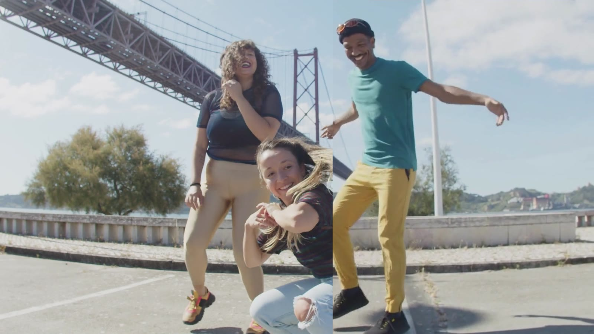
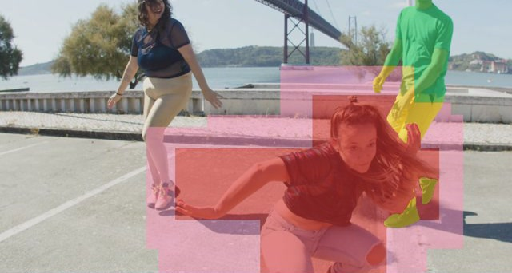
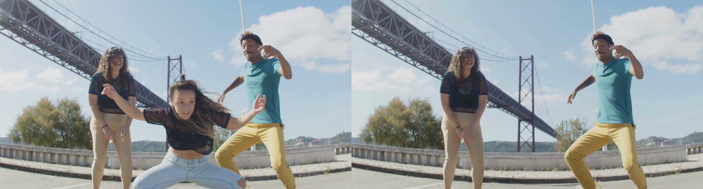

One dancer out of a moving shot.
I built a tool that removes one person from a moving shot and keeps everyone else in it.

BeforeAfterIn this stock clip the camera moves low across a waterfront plaza. The dancer in the middle is gone from every frame, the two beside her stay as they were shot, and the plaza, the wall, the river and the bridge are rebuilt where she was.
Left of the line is the source, Pexels stock video 8714849. Right of it is the result, 1920 × 1080 at 25 fps. Both halves play from one video file, so they stay frame for frame. The clip has no sound.
How it works
- The brief. One sentence: remove the dancer in the middle, keep the other two.
- Mask. SAM 3.1 tracks the dancer to remove in every frame, and the man beside her, who has to stay. The hole is her mask minus his.
- Cut. The shot goes in as two pieces of 243 frames that overlap by 29 frames. 243 frames is the longest run the model takes.
- Fill. The hole is painted flat grey. MiniMax H3 with the ReFrameVideo LoRA, which reads that grey as space to fill, paints it from a text description of what is behind her: "the sunlit concrete plaza with white painted lines, the low white stone wall and steps, and the river and the suspension bridge behind it". Each piece renders on H3's 1344 × 768 canvas on a rented GPU.
- Check. Each piece goes on a frame sheet, the source next to the output, and the join is checked frame by frame through the fade.
- Join. The second piece fades in over the first for 0.5 s (12 frames) at frame 220, and the shot comes back out at 1920 × 1080 and 25 fps.


What the run measured
The run used one NVIDIA RTX A6000 with 48 GB, on a pod rented by the hour.
Client work is under NDA. I can walk you through it in an interview.
This is a personal study, not client or commercial work. The source clip is Pexels stock video 8714849. MiniMax H3 with VoidEclipseAI's ReFrameVideo LoRA generates the background where the dancer was, and the masks come from Meta's SAM 3.1.